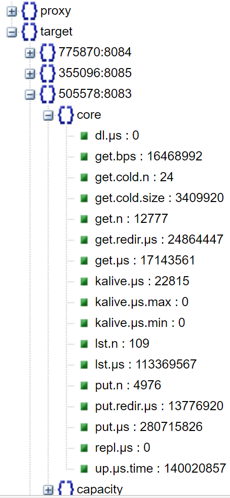

HTTP_API
RESTful API
Table of Contents
- Notation
- Overview
- API Reference
- Cloud Provider
- Querying information
- Example: querying runtime statistics
Notation
In this README:
G- denotes a (hostname:port) address of a gateway (any gateway in a given AIS cluster)
T- (hostname:port) of a storage target
G-or-T- (hostname:port) of any node member of the cluster
Overview
AIStore supports a growing number and variety of RESTful operations. To illustrate common conventions, let’s take a look at the example:
$ curl -X GET http://G-or-T/v1/daemon?what=config
This command queries one of the AIS nodes (denoted as G-or-T) for its configuration. The query - as well as most of other control plane queries - results in a JSON-formatted output that can be viewed with any compatible JSON viewer.
Notice the 4 (four) ubiquitous elements in the curl command line above:
- HTTP verb aka method, one of:
PUT,GET,HEAD,POST, orDELETE.
In the example, it’s a GET but it can also be POST, PUT, and DELETE. For a brief summary of the standard HTTP verbs and their CRUD semantics, see, for instance, this REST API tutorial.
- Hostname (or IPv4 address) and TCP port of one of the AIStore daemons.
Most RESTful operations performed on an AIStore proxy/gateway will likely have a clustered scope. Exceptions may include querying proxy’s own configuration via ?what=config, and more.
- URL path: version of the REST API, RESTful resource that is operated upon, and possibly more forward-slash delimited specifiers.
For example: /v1/cluster where v1 is the currently supported API version and cluster is the (RESTful) resource. Other resources include:
| RESTful resource | Description |
|---|---|
cluster |
cluster-wide control-plane operation |
daemon |
control-plane request to update or query specific AIS daemon (proxy or target) |
buckets |
create, destroy, rename and list bucket(s), get bucket names, get bucket properties |
objects |
datapath request to GET, PUT and DELETE objects, read their properties |
download |
download external resources (datasets, files) into cluster |
- Control message in the query string parameter, e.g.
?what=config.
Combined, all these elements tell the following story. They specify the most generic action (e.g., GET) and designate the target aka “resource” of this action: e.g., an entire cluster or a given daemon. Further, they may also include context-specific and query string encoded control message to, for instance, distinguish between getting system statistics (
?what=stats) versus system configuration (?what=config).
For developers and first-time users: if you deployed AIS locally having followed these instructions then most likely you will have
http://localhost:8080as the primary proxy, and generally,http://localhost:808xfor all locally-deployed AIS daemons.
The reference below is “formulated” in
curl- i.e., usingcurlcommand lines. It is possible, however, and often much easier (and, therefore, preferable), to execute the same operations using AIS CLI.
API Reference
| Operation | HTTP action | Example |
|--- | --- | ---|
| Unregister storage target | DELETE /v1/cluster/daemon/daemonID | curl -i -X DELETE 'http://G/v1/cluster/daemon/15205:8083' |
| Register storage target | POST /v1/cluster/register | curl -i -X POST -H 'Content-Type: application/json' -d '{"daemon_type": "target", "node_ip_addr": "172.16.175.41", "daemon_port": "8083", "daemon_id": "43888:8083", "direct_url": "http://172.16.175.41:8083"}' 'http://localhost:8083/v1/cluster/register' |
| Register storage proxy | POST /v1/cluster/register | curl -i -X POST -H 'Content-Type: application/json' -d '{"daemon_type": "proxy", "node_ip_addr": "172.16.175.41", "daemon_port": "8083", "daemon_id": "43888:8083", "direct_url": "http://172.16.175.41:8083"}' 'http://localhost:8083/v1/cluster/register' |
| Set primary proxy (primary proxy only)| PUT /v1/cluster/proxy/new primary-proxy-id | curl -i -X PUT 'http://G-primary/v1/cluster/proxy/26869:8080' |
| Force-Set primary proxy (primary proxy)| PUT /v1/daemon/proxy/proxyID | curl -i -X PUT -G 'http://G-primary/v1/daemon/proxy/23ef189ed' --data-urlencode "frc=true" --data-urlencode "can=http://G-new-designated-primary" 6|
| Set AIS node configuration via JSON message | PUT {“action”: “setconfig”, “name”: “some-name”, “value”: “other-value”} /v1/daemon | curl -i -X PUT -H 'Content-Type: application/json' -d '{"action": "setconfig","name": "stats_time", "value": "1s"}' 'http://G-or-T/v1/daemon'
• For the list of named options, see runtime configuration |
| Set AIS node configuration via URL query | PUT /v1/daemon/setconfig/?name1=value1&name2=value2&... | curl -i -X PUT 'http://G-or-T/v1/daemon/setconfig?stats_time=33s&log.loglevel=4'
• Allows to update multiple values in one shot
• For the list of named configuration options, see runtime configuration |
| Set cluster-wide configuration via JSON message (proxy) | PUT {“action”: “setconfig”, “name”: “some-name”, “value”: “other-value”} /v1/cluster | curl -i -X PUT -H 'Content-Type: application/json' -d '{"action": "setconfig","name": "stats_time", "value": "1s"}' 'http://G/v1/cluster'
• Note below the alternative way to update cluster configuration
• For the list of named options, see runtime configuration |
| Set cluster-wide configuration via URL query (proxy) | PUT /v1/cluster/setconfig/?name1=value1&name2=value2&... | curl -i -X PUT 'http://G/v1/cluster/setconfig?stats_time=33s&log.loglevel=4'
• Allows to update multiple values in one shot
• For the list of named configuration options, see runtime configuration |
| Shutdown target/proxy | PUT {“action”: “shutdown”} /v1/daemon | curl -i -X PUT -H 'Content-Type: application/json' -d '{"action": "shutdown"}' 'http://G-or-T/v1/daemon' |
| Shutdown cluster (proxy) | PUT {“action”: “shutdown”} /v1/cluster | curl -i -X PUT -H 'Content-Type: application/json' -d '{"action": "shutdown"}' 'http://G-primary/v1/cluster' |
| Rebalance cluster (proxy) | PUT {“action”: “rebalance”, “value”: “start”} /v1/cluster | curl -i -X PUT -H 'Content-Type: application/json' -d '{"action": "rebalance", "value": "start"}' 'http://G/v1/cluster' |
| Abort global (automated or manually started) rebalance (proxy) | PUT {“action”: “rebalance”, “value”: “abort”} /v1/cluster | curl -i -X PUT -H 'Content-Type: application/json' -d '{"action": "rebalance", "value": "abort"}' 'http://G/v1/cluster' |
| Create ais bucket (proxy) | POST {“action”: “createlb”} /v1/buckets/bucket-name | curl -i -X POST -H 'Content-Type: application/json' -d '{"action": "createlb"}' 'http://G/v1/buckets/abc' |
| Destroy ais bucket (proxy) | DELETE {“action”: “destroylb”} /v1/buckets/bucket-name | curl -i -X DELETE -H 'Content-Type: application/json' -d '{"action": "destroylb"}' 'http://G/v1/buckets/abc' |
| Rename ais bucket (proxy) | POST {“action”: “renamelb”} /v1/buckets/bucket-name | curl -i -X POST -H 'Content-Type: application/json' -d '{"action": "renamelb", "name": "newname"}' 'http://G/v1/buckets/oldname' |
| Recover buckets bucket (proxy) | POST {“action”: “recoverbck”} /v1/buckets?force=true | curl -i -X POST -H 'Content-Type: application/json' -d '{"action": "recoverbck"}' 'http://G/v1/buckets' |
| Rename/move object (ais buckets) | POST {“action”: “rename”, “name”: new-name} /v1/objects/bucket-name/object-name | curl -i -X POST -L -H 'Content-Type: application/json' -d '{"action": "rename", "name": "dir2/DDDDDD"}' 'http://G/v1/objects/mybucket/dir1/CCCCCC' 3 |
| Check if an object is cached | HEAD /v1/objects/bucket-name/object-name | curl -L --head 'http://G/v1/objects/mybucket/myobject?check_cached=true' |
| Get object (proxy) | GET /v1/objects/bucket-name/object-name | curl -L -X GET 'http://G/v1/objects/myS3bucket/myobject' -o myobject 1 |
| Read range (proxy) | GET /v1/objects/bucket-name/object-name?offset=&length= | curl -L -X GET 'http://G/v1/objects/myS3bucket/myobject?offset=1024&length=512' -o myobject |
| Get bucket names | GET /v1/buckets/* | curl -X GET 'http://G/v1/buckets/*' |
| List objects in a given bucket | POST {“action”: “listobjects”, “value”:{ properties-and-options... }} /v1/buckets/bucket-name | curl -X POST -L -H 'Content-Type: application/json' -d '{"action": "listobjects", "value":{"props": "size"}}' 'http://G/v1/buckets/myS3bucket' 2 |
| Get bucket properties | HEAD /v1/buckets/bucket-name | curl -L --head 'http://G/v1/buckets/mybucket' |
| Get object props | HEAD /v1/objects/bucket-name/object-name | curl -L --head 'http://G/v1/objects/mybucket/myobject' |
| Put object (proxy) | PUT /v1/objects/bucket-name/object-name | curl -L -X PUT 'http://G/v1/objects/myS3bucket/myobject' -T filenameToUpload |
| Put multi-part object (proxy) | PUT /v1/objects/bucket-name/object-name?appendty=append&handle= | curl -L -X PUT 'http://G/v1/objects/myS3bucket/myobject?appendty=append&handle=' -T filenameToUpload-partN 8 |
| Finalize multi-part object (proxy) | PUT /v1/objects/bucket-name/object-name?appendty=flush&handle=obj-handle | curl -L -X PUT 'http://G/v1/objects/myS3bucket/myobject?appendty=flush&handle=obj-handle' 8 |
| Delete object | DELETE /v1/objects/bucket-name/object-name | curl -i -X DELETE -L 'http://G/v1/objects/mybucket/myobject' |
| Delete a list of objects | DELETE ‘{“action”:”delete”, “value”:{“objnames”:”[o1[,o]]”[, deadline: string][, wait: bool]}}’ /v1/buckets/bucket-name | curl -i -X DELETE -H 'Content-Type: application/json' -d '{"action":"delete", "value":{"objnames":["o1","o2","o3"], "deadline": "10s", "wait":true}}' 'http://G/v1/buckets/abc' 4 |
| Delete a range of objects | DELETE ‘{“action”:”delete”, “value”:{“prefix”:”your-prefix”,”regex”:”your-regex”,”range”,”min:max” [, deadline: string][, wait:bool]}}’ /v1/buckets/bucket-name | curl -i -X DELETE -H 'Content-Type: application/json' -d '{"action":"delete", "value":{"prefix":"__tst/test-", "regex":"\\d22\\d", "range":"1000:2000", "deadline": "10s", "wait":true}}' 'http://G/v1/buckets/abc' 4 |
| Configure bucket as n-way mirror (proxy) | POST {“action”: “makencopies”, “value”: n} /v1/buckets/bucket-name | curl -i -X POST -H 'Content-Type: application/json' -d '{"action":"makencopies", "value": 2}' 'http://G/v1/buckets/abc' |
| Enable erasure coding protection for all objects (proxy) | POST {“action”: “ecencode”} /v1/buckets/bucket-name | curl -i -X POST -H 'Content-Type: application/json' -d '{"action":"ecencode"}' 'http://G/v1/buckets/abc' |
| Set bucket properties (proxy) | PATCH {“action”: “setprops”} /v1/buckets/bucket-name | curl -i -X PUT -H 'Content-Type: application/json' -d '{"action":"setprops", "value": {"cksum": {"type": "inherit"}, "mirror": {"enable": true}}' 'http://G/v1/buckets/abc' |
| Reset bucket properties (proxy) | PUT {“action”: “resetprops”} /v1/buckets/bucket-name | curl -i -X PUT -H 'Content-Type: application/json' -d '{"action":"resetprops"}' 'http://G/v1/buckets/abc' |
| Prefetch a list of objects | POST ‘{“action”:”prefetch”, “value”:{“objnames”:”[o1[,o]]”[, deadline: string][, wait: bool]}}’ /v1/buckets/bucket-name | curl -i -X POST -H 'Content-Type: application/json' -d '{"action":"prefetch", "value":{"objnames":["o1","o2","o3"], "deadline": "10s", "wait":true}}' 'http://G/v1/buckets/abc' 4 |
| Prefetch a range of objects| POST ‘{“action”:”prefetch”, “value”:{“prefix”:”your-prefix”,”regex”:”your-regex”,”range”,”min:max” [, deadline: string][, wait:bool]}}’ /v1/buckets/bucket-name | curl -i -X POST -H 'Content-Type: application/json' -d '{"action":"prefetch", "value":{"prefix":"__tst/test-", "regex":"\\d22\\d", "range":"1000:2000", "deadline": "10s", "wait":true}}' 'http://G/v1/buckets/abc' 4 |
| Evict object from cache | DELETE ‘{“action”: “evictobjects”}’ /v1/objects/bucket-name/object-name | curl -i -X DELETE -L -H 'Content-Type: application/json' -d '{"action": "evictobjects"}' 'http://G/v1/objects/mybucket/myobject' |
| Evict cloud bucket (proxy) | DELETE {“action”: “evictcb”} /v1/buckets/bucket-name | curl -i -X DELETE -H 'Content-Type: application/json' -d '{"action": "evictcb"}' 'http://G/v1/buckets/myS3bucket' |
| Evict a list of objects | DELETE ‘{“action”:”evictobjects”, “value”:{“objnames”:”[o1[,o]]”[, deadline: string][, wait: bool]}}’ /v1/buckets/bucket-name | curl -i -X DELETE -H 'Content-Type: application/json' -d '{"action":"evictobjects", "value":{"objnames":["o1","o2","o3"], "deadline": "10s", "wait":true}}' 'http://G/v1/buckets/abc' 4 |
| Evict a range of objects| DELETE ‘{“action”:”evictobjects”, “value”:{“prefix”:”your-prefix”,”regex”:”your-regex”,”range”,”min:max” [, deadline: string][, wait:bool]}}’ /v1/buckets/bucket-name | curl -i -X DELETE -H 'Content-Type: application/json' -d '{"action":"evictobjects", "value":{"prefix":"__tst/test-", "regex":"\\d22\\d", "range":"1000:2000", "deadline": "10s", "wait":true}}' 'http://G/v1/buckets/abc' 4 |
| Disable mountpath (target) | POST {“action”: “disable”, “value”: “/existing/mountpath”} /v1/daemon/mountpaths | curl -X POST -L -H 'Content-Type: application/json' -d '{"action": "disable", "value":"/mount/path"}' 'http://T/v1/daemon/mountpaths'5 |
| Enable mountpath (target) | POST {“action”: “enable”, “value”: “/existing/mountpath”} /v1/daemon/mountpaths | curl -X POST -L -H 'Content-Type: application/json' -d '{"action": "enable", "value":"/mount/path"}' 'http://T/v1/daemon/mountpaths'5 |
| Add mountpath (target) | PUT {“action”: “add”, “value”: “/new/mountpath”} /v1/daemon/mountpaths | curl -X PUT -L -H 'Content-Type: application/json' -d '{"action": "add", "value":"/mount/path"}' 'http://T/v1/daemon/mountpaths' |
| Remove mountpath from target | DELETE {“action”: “remove”, “value”: “/existing/mountpath”} /v1/daemon/mountpaths | curl -X DELETE -L -H 'Content-Type: application/json' -d '{"action": "remove", "value":"/mount/path"}' 'http://T/v1/daemon/mountpaths' |
| Promote file/directory(proxy) | POST {“action”: “promote”, “name”: “/home/user/dirname”, “value”: {“target”: “234ed78”, “trim_prefix”: “/home/user/”, “recurs”: true}} /v1/buckets/bucket-name | curl -i -X POST -H 'Content-Type: application/json' -d '{"action":"promote", "name":"/user/dir", "value": {"target": "234ed78", "trim_prefix": "/user/", "recurs": true} }' 'http://G/v1/buckets/abc' 7|
___
1: This will fetch the object “myS3object” from the bucket “myS3bucket”. Notice the -L - this option must be used in all AIStore supported commands that read or write data - usually via the URL path /v1/objects/. For more on the -L and other useful options, see Everything curl: HTTP redirect.
2: See the List Bucket section for details. ↩
3: Notice the -L option here and elsewhere. ↩
4: See the List/Range Operations section for details.
5: The request returns an HTTP status code 204 if the mountpath is already enabled/disabled or 404 if mountpath was not found.
6: Advanced usage only. Use it to reassign the primary role administratively or if a cluster ever gets in a so-called split-brain mode. ↩
7: The request promotes files to objects; note that the files must be present inside AIStore targets and be referenceable via local directories or fully qualified names. The example request promotes recursively all files of a directory /user/dir that is on the target with ID 234ed78 to objects of a bucket abc. As trim_prefix is set, the names of objects are the file paths with the base trimmed: dir/file1, dir/file2, dir/subdir/file3 etc.
8: When putting the first part of an object, handle value must be empty string or omitted. On success, the first request returns an object handle. The subsequent AppendObject and FlushObject requests must pass the handle to the API calls. The object gets accessible and appears in a bucket only after FlushObject is done.
Cloud Provider
Any storage bucket that AIS handles may originate in a 3rd party Cloud, or in another AIS cluster, or - the 3rd option - be created (and subsequently filled-in) in the AIS itself. But what if there’s a pair of buckets, a Cloud-based and, separately, an AIS bucket that happen to share the same name? To resolve all potential naming, and (arguably, more importantly) partition namespace with respect to both physical isolation and QoS, AIS introduces the concept of provider.
- Cloud Provider - an abstraction, and simultaneously an API-supported option, that allows to delineate between “remote” and “local” buckets with respect to a given AIS cluster.
Cloud provider (aka “bucket provider”) is realized as an optional parameter across all AIStore APIs that handle access to user data and bucket configuration. The list (of those APIs) includes GET, PUT, DELETE and Range/List operations. Supported providers, on the other hand, are enumerated and documented:
ais- for AIS buckets,aws, orgcp- for S3 and Google Cloud buckets, respectively.
In all those cases users can add an optional ?provider=ais or ?provider=aws or ?provider=gcp query to the GET (PUT, DELETE, List/Range) request.
Curl example: curl -L -X GET 'http://G/v1/objects/myS3bucket/myobject?provider=ais'
For more information, CLI examples, and the most recent updates, please see:
Supported APIs
| RESTful verb | AIS APIs |
|---|---|
| GET | GET object, Read range, Get bucket names |
| PUT | PUT object, APPEND object, Set single bucket property, Set bucket properties |
| DELETE | DELETE object, DELETE list of objects, DELETE range of objects |
| HEAD | Get bucket properties, Get object properties |
Querying information
AIStore provides an extensive list of RESTful operations to retrieve cluster current state:
| Operation | HTTP action | Example |
|---|---|---|
| Get cluster map | GET /v1/daemon | curl -X GET http://G/v1/daemon?what=smap |
| Get proxy/target configuration | GET /v1/daemon | curl -X GET http://G-or-T/v1/daemon?what=config |
| Get proxy/target snode | GET /v1/daemon | curl -X GET http://G-or-T/v1/daemon?what=snode |
| Get proxy/target status | GET /v1/daemon | curl -X GET http://G-or-T/v1/daemon?what=status |
| Get cluster statistics (proxy) | GET /v1/cluster | curl -X GET http://G/v1/cluster?what=stats |
| Get target statistics | GET /v1/daemon | curl -X GET http://T/v1/daemon?what=stats |
| Get process info for all nodes in cluster (proxy) | GET /v1/cluster | curl -X GET http://G/v1/cluster?what=sysinfo |
| Get proxy/target system info | GET /v1/daemon | curl -X GET http://G-or-T/v1/daemon?what=sysinfo |
| Get xactions’ statistics (proxy) More | GET /v1/cluster | curl -i -X GET -H 'Content-Type: application/json' -d '{"action": "stats", "name": "xactionname", "value":{"bucket":"bckname"}}' 'http://G/v1/cluster?what=xaction' |
| Get list of target’s filesystems (target) | GET /v1/daemon?what=mountpaths | curl -X GET http://T/v1/daemon?what=mountpaths |
| Get list of all targets’ filesystems (proxy) | GET /v1/cluster?what=mountpaths | curl -X GET http://G/v1/cluster?what=mountpaths |
| Get bucket list from a given target | GET /v1/daemon | curl -X GET http://T/v1/daemon?what=bucketmd |
Example: querying runtime statistics
$ curl -X GET http://G/v1/cluster?what=stats
This single command causes execution of multiple GET ?what=stats requests within the AIStore cluster, and results in a JSON-formatted consolidated output that contains both http proxy and storage targets request counters, as well as per-target used/available capacities. For example:

More usage examples can be found in the README that describes AIS configuration.